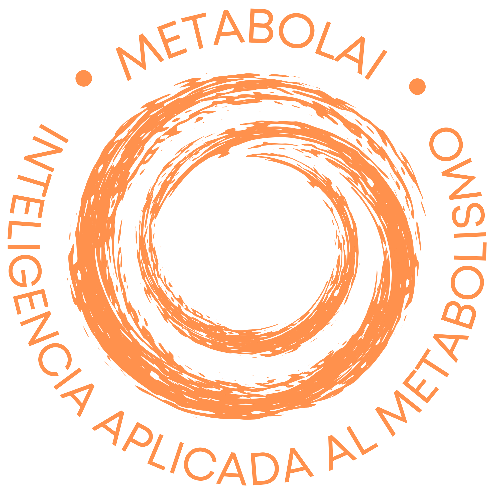

Advanced software for education, monitoring, and decision-making in metabolic health and cardiometabolic risk management. Intelligent technology at the service of patients and physicians.
Get in TouchMetabolAI is an advanced software solution designed to support education, monitoring, and decision-making in metabolic health, control of cardiometabolic risk factors, and clinical bariatric medicine.
MetabolAI was born from a clear vision: technology should not replace the physician, nor oversimplify patient complexity. It should serve as an intelligent tool to organize information, interpret data, accompany processes, and strengthen clinical decisions with criterion, evidence, and human sense.
MetabolAI is a complete system, designed to operate at different levels of healthcare and patient engagement.
MetabolAI offers clear, accessible, and responsible information about metabolism, body weight, food, insulin resistance, cardiometabolic risk, healthy habits, and bariatric medicine. It answers concerns, clarifies frequently asked questions, and helps demystify concepts that are often confused with fad diets, quick promises, and unfounded advice.
MetabolAI functions as an educational complement and accompaniment to medical advice. It helps reinforce medical recommendations, resolve daily questions, improve adherence, understand the process of habit change, and maintain a more conscious relationship with nutrition, physical activity, sleep, weight, and metabolic health. It can generate menus following dietary recommendations from the treating physician or nutritionist.
MetabolAI goes further. It is a clinical support tool that allows you to analyze data, structure clinical information, identify risk factors, orient metabolic interpretation, and support medical management with permanently updated scientific evidence. Its objective is not to replace professional judgment, but to enhance it. The physician remains the one who thinks, decides, and responds to the patient. MetabolAI organizes, accompanies, and amplifies that capacity.
MetabolAI is the result of years of conceptual design, algorithmic construction, and clinical refinement.
The system has been developed after years of conceptual design, construction of its main algorithm, and creation of secondary workflows that allow addressing metabolic health from an integral perspective. It is not an improvised application or a generic chatbot dressed as a physician. It is software architecture designed from real clinical practice, with experience accumulated over decades treating patients with overweight, obesity, insulin resistance, dyslipidemia, hypertension, type 2 diabetes, fatty liver disease, and other components of cardiometabolic risk.
MetabolAI integrates artificial intelligence with human intelligence. That difference is fundamental. Artificial intelligence provides speed, analysis, operative memory, structure, and capacity for updating. Human intelligence provides criterion, ethics, experience, empathy, and understanding of context. Medicine needs both. The patient needs both as well.
MetabolAI has been conceived with high standards of computer security, data protection, and operational reliability, aligned with international requirements of the technology industry. In health, innovation cannot be separated from responsibility. Clinical information demands precision, confidentiality, and robust systems. MetabolAI was designed with this premise from its inception.
MetabolAI's purpose is clear: put the patient at the center.
Each function, each workflow, and each analysis exist to improve understanding of the case, facilitate monitoring, support the professional, and help medical decisions be more timely, more informed, and more human.
MetabolAI represents years of work, design, testing, correction, and vision. It is the materialization of an idea that had to wait for technology to reach sufficient maturity to become reality.
It is not artificial intelligence to replace medicine.
It is artificial intelligence to practice medicine better.
It is not cold technology.
It is clinical technology with purpose.
MetabolAI is currently available for qualified healthcare professionals and organizations. Contact us to learn more about access, integration, and implementation.
30 N Gould St, Ste N
Sheridan, Wyoming 82801
USA